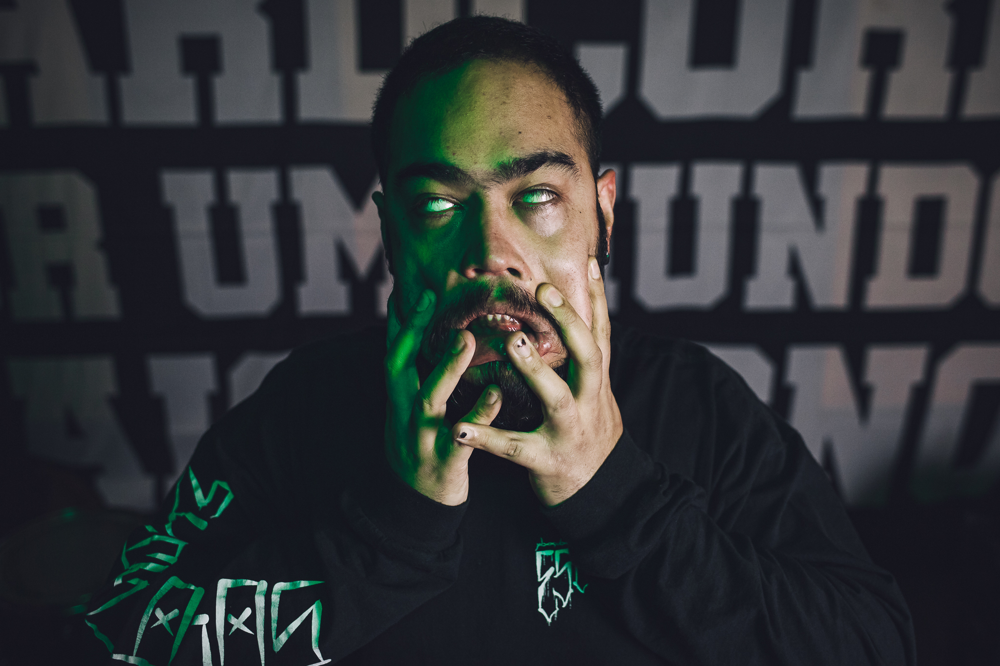

IGOR
Autodidata, começou tocando violão as 12 anos. Fundou sua primeira banda "Hollow
Head" com João Limeira (Inherence), sua atuação com a banda foi de 2012 a 2017, tendo lançado o álbum
autointitulado em 2015.
Com influências de punk, industrial, noise, thrash, death nu metal, Igor leva por onde passa timbres
estralados e linhas marcantes.
Em 2015 conheceu o Escombro e desde então assumiu os baixos do quarteto paulistano de hardcore. Escombro tem
registros de 2015, um split com Darrua, "SP Caos"; O autointitulado de 2017; EP "Eutanásia Social" em 2018;
o Single "O peso de sobreviver" em a censura sofrida em Brasília em 2019;Cicatrizes em 2020, conta com 4
faixas assim como EP "Recomeço" de 2023.
Teve passagem pelo Olho Seco no Carnaval Punk de 2018, Tocou com Fim do Silêncio, onde ajudou a compor o
álbum "Como era antigamente" de 2018.